# 什么是 GitHub Pages
GitHub Pages 是 GitHub 提供给每一个开发者的服务， 是通过 GitHub 网站托管和发布的公开网页，借此我们能免费发布静态页面
# 使用 GitHub
- 进入 github 官网，注册 github 账号
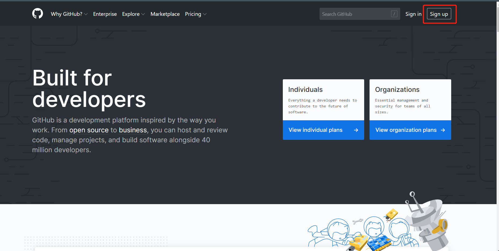 - 填入用户名，密码，邮箱，然后点一下下面的机器人验证
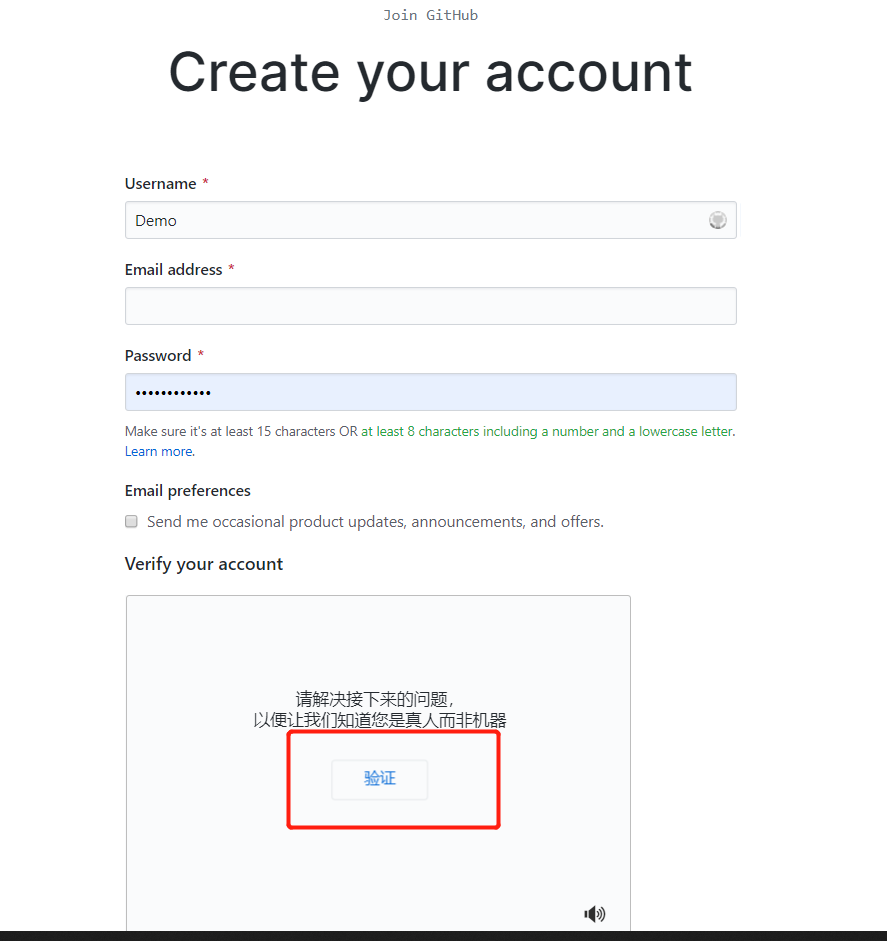 - 选择账号类型，根据自己的需要来选，我这里选个人 - 免费（因为贫穷啊）
- 这里是一些问卷调查，我跳过了
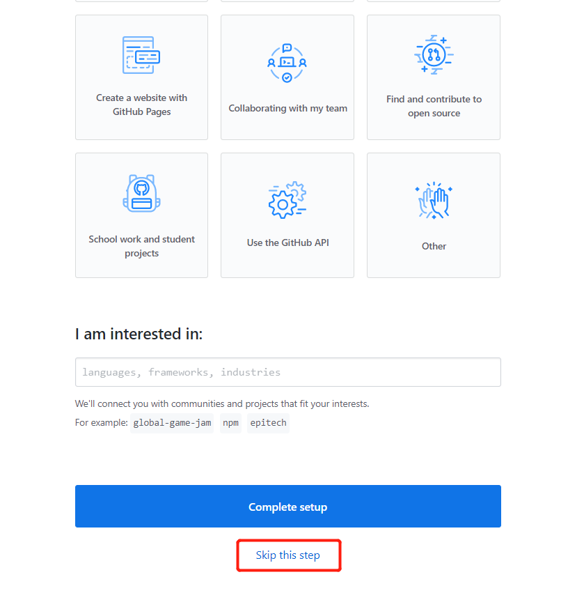 - 到这里你邮箱就会收到验证邮件，点击里面的连接验证邮箱就好了
# 创建第一个仓库
- 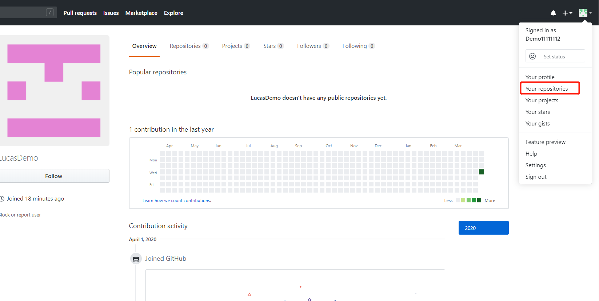
- 点击新增
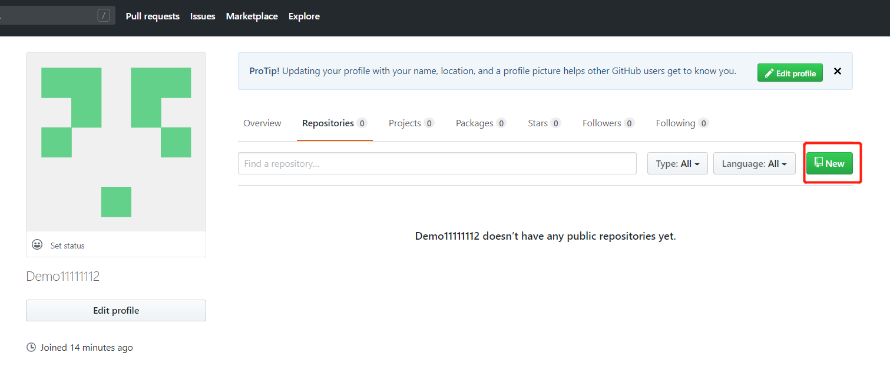 - 输入仓库基本信息，必须以 username.github.io 作为仓库名字，必须设置为 public，否则要收费才能使用 github page
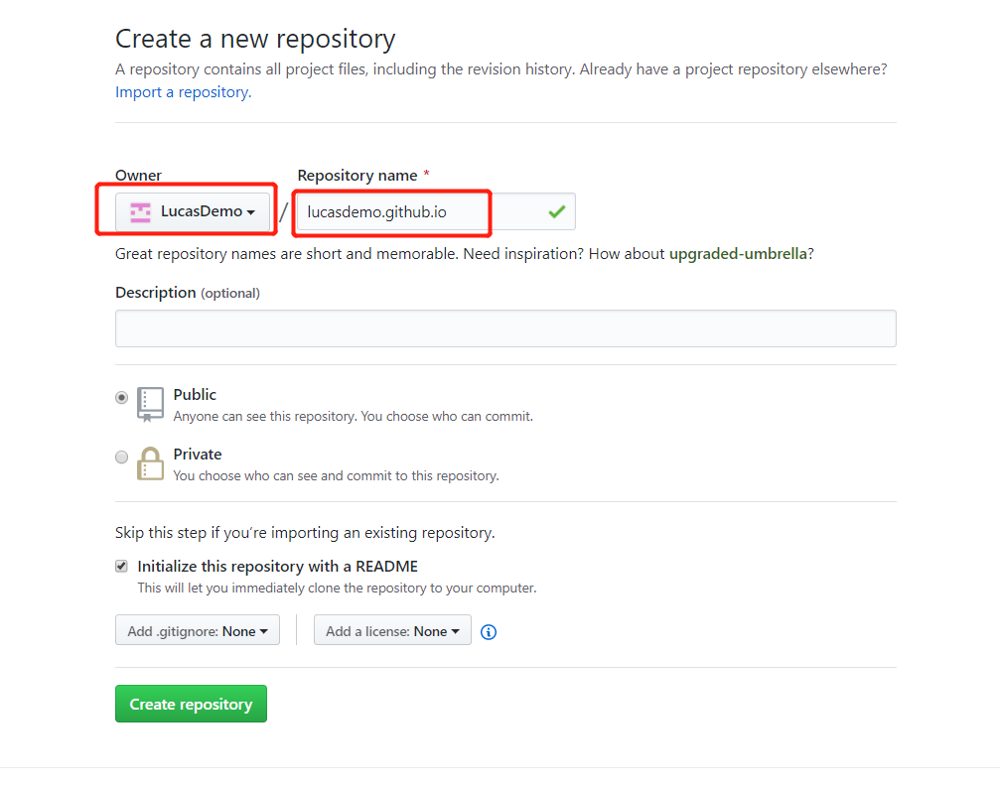
点击创建 - 随后进入到仓库页面，点击设置
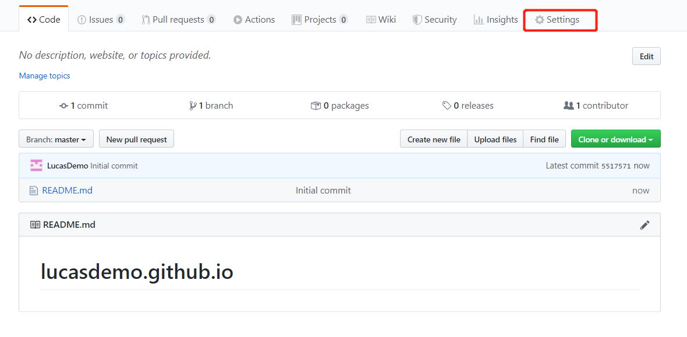 - 往下拉看到 Github page，只有以用户名命名的仓库才有，打开连接就能看见首页，首页默认是仓库的 README.md 文件或者是 index 文件
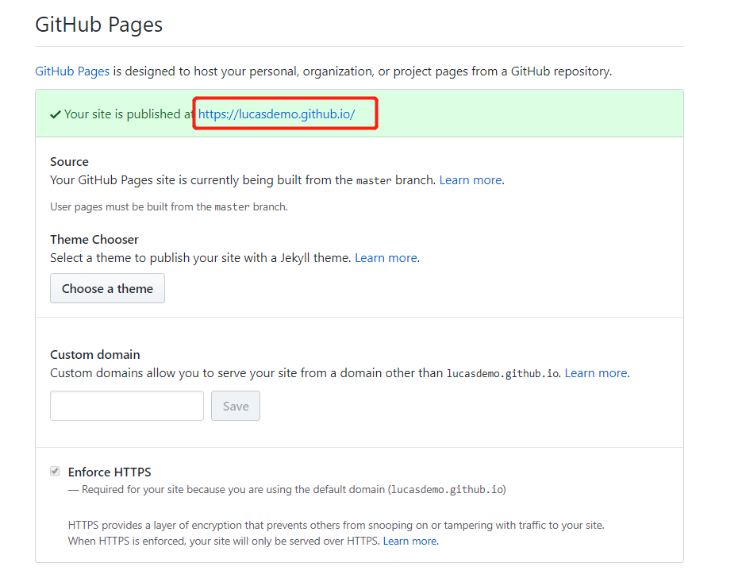 - 由于仓库里只有一个 README.md 文件，所有显示是这样的
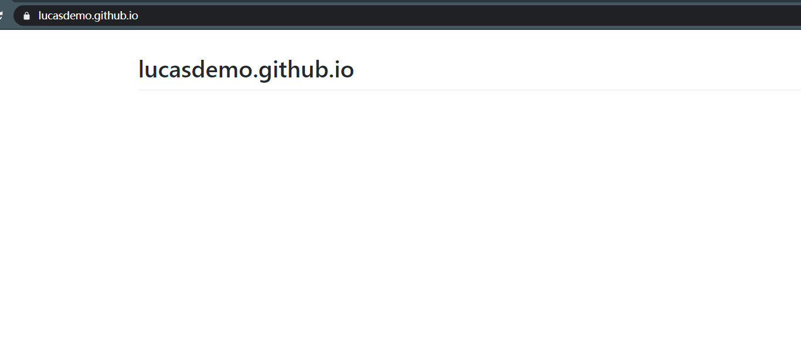 - 接下来我们就可以把我们的静态页面上传到仓库就可以了
# 绑定域名
github page 的域名只能是 https://username.github.io/ 这种格式，他是个二级域名，非常的长，我们可以把他换成我们自己的域名
# 购买域名
首先，我们得要有一个域名，域名是由 ICANN 提供的，在国内我们可以通过代理商来买到，价格有高有低，腾讯云经常有域名打折活动，能以很低的价格买到域名，所以博主选择到腾讯云去购买
先进入腾讯云首页，注册一个账号，然后点击域名特惠
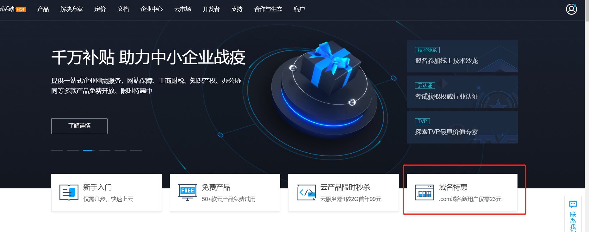
然后选择一个域名购买就可以了，如果名字被用了就换一个名字或者后缀
支付成功后进入解析台
# 配置域名解释器
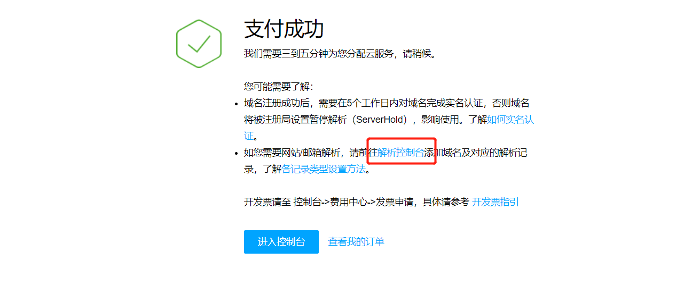
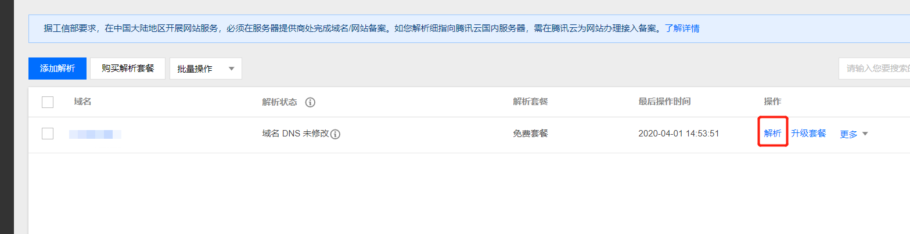
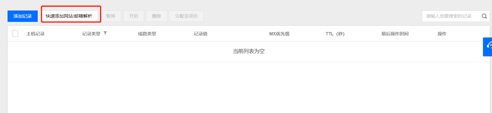
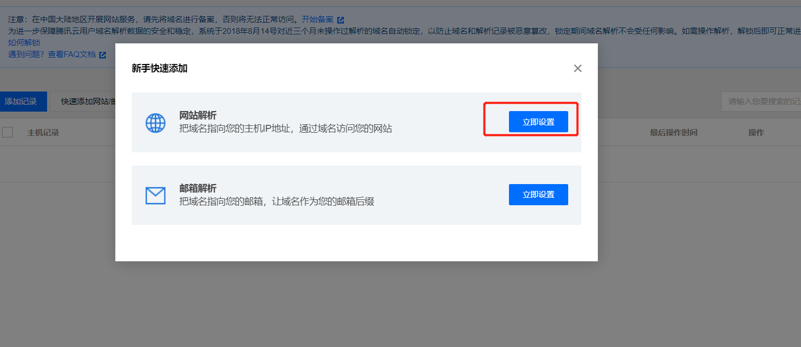
打开命令行，ping 你的静态仓库地址
$ ping lucasdemo.github.io | |
正在 Ping lucasdemo.github.io [185.199.109.153] 具有 32 字节的数据: | |
来自 435.199.109.153 的回复: 字节=32 时间=188ms TTL=45 | |
来自 435.199.109.153 的回复: 字节=32 时间=189ms TTL=45 | |
来自 435.199.109.153 的回复: 字节=32 时间=190ms TTL=45 | |
来自 435.199.109.153 的回复: 字节=32 时间=188ms TTL=45 | |
185.199.109.153 的 Ping 统计信息: | |
数据包: 已发送 = 4，已接收 = 4，丢失 = 0 (0% 丢失)， | |
往返行程的估计时间(以毫秒为单位): | |
最短 = 188ms，最长 = 190ms，平均 = 188ms |
435.199.109.153 就 ip 地址了，填入腾讯云域名解析器
这里输入我们 Github page 的 ip 地址就可以了
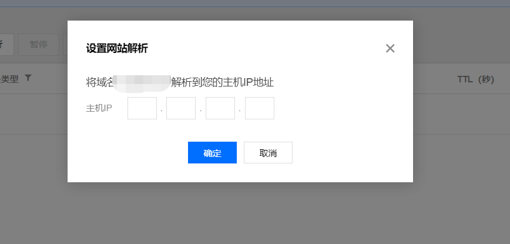
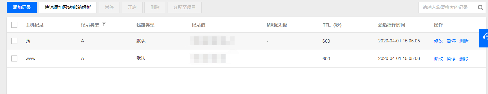
然后进行实名认证
非顶级域名 (.cn) 需要实名认证才能使用域名，顶级域名则需要备案才能使用
进入腾讯云域名管理器
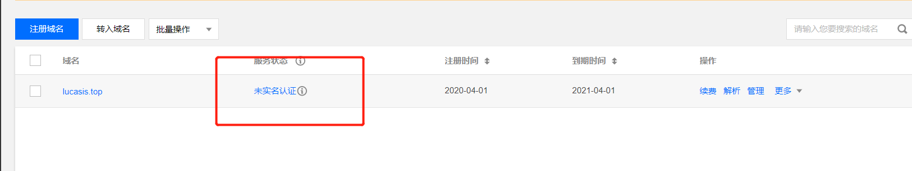
认证成功后再刷新一下域名解析器就可以了
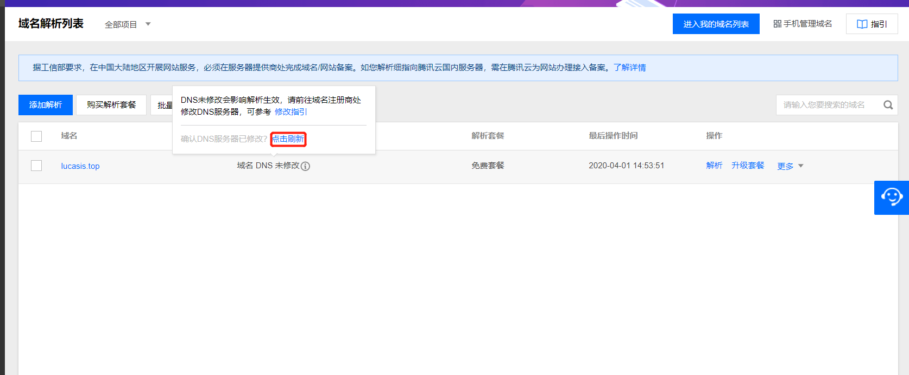
# 仓库设置
回到我们的仓库首页，进入设置页面，找到 GitHub Pages，在 Custom domain 填入你的域名
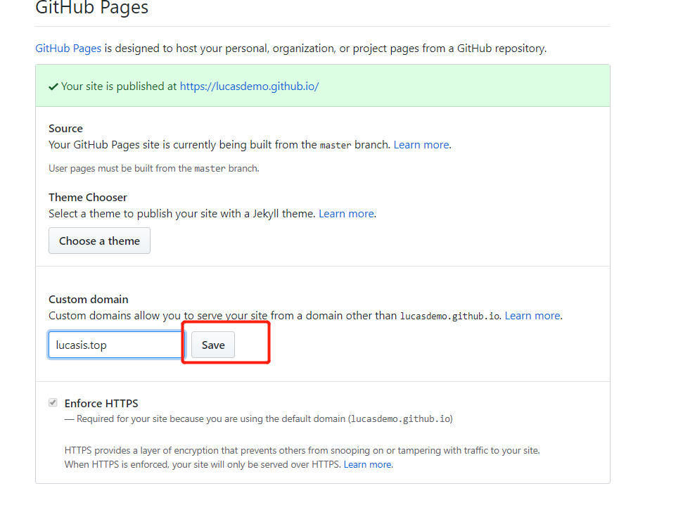
保存后 GitHub 会在你的仓库里生成一个 CNAME 文件
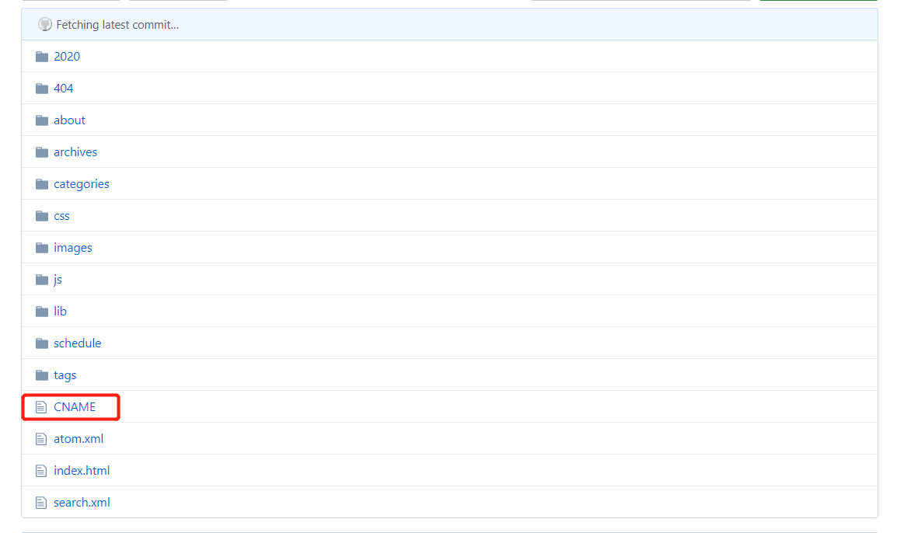
这里有个坑，这个 CNAME 记录你的域名，但是如果你本地项目里没有这个文件，每次你上传博客到 github 上这个文件就会被删除掉，一旦删除掉你的域名就会失效又要重新配置域名了，所以 copy 一份这个文件到你的本地博客文件夹里！！！